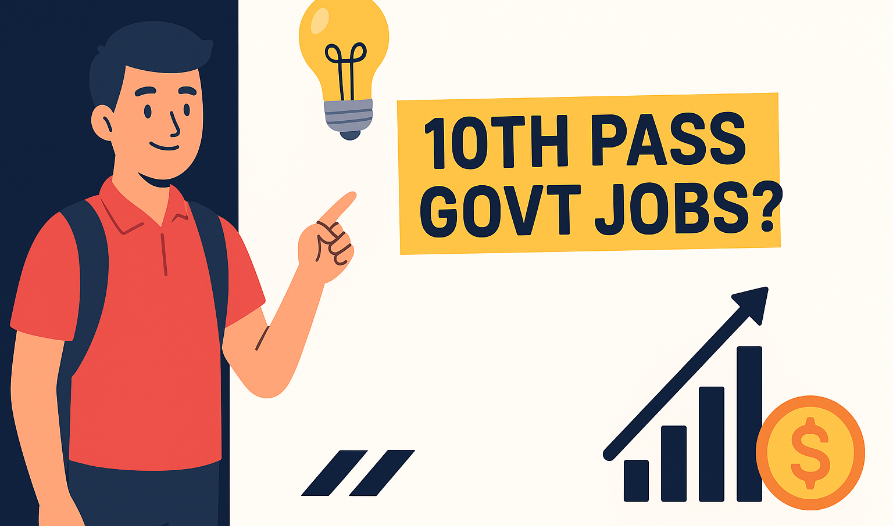
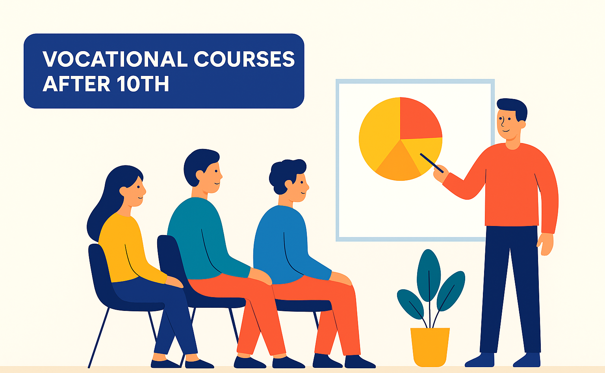

After completing Class 10, there are several job opportunities and career paths you can explore. 🎓💼
While most high-paying jobs require higher education, there are still many options for students who want to start working early.
1. ğŸ›ï¸ Government Jobs
You can apply for various government jobs that require only a Class 10 qualification:
- 🪖 Indian Army – Soldier, Tradesman
- 🚆 Railways – RRB Group D, Apprentice
- 👮 Police & Forces – CRPF, BSF, Constable
- 🗂️ SSC MTS – Multi-Tasking Staff
- 📬 Post Office – Postman, Mail Guard
Tip: 📘 Most govt jobs require entrance exams.
2. 💼 Private Sector Jobs

Private companies hire 10th pass candidates for roles like:
- 🧑‍💻 Data Entry Operator
- 📠Call Center / BPO Executive
- ğŸ›ï¸ Sales & Marketing Executive
- 📦 Delivery Partner (Amazon, Zomato)
- 🔌 Technician / Electrician (via ITI)
- 🧾 Receptionist & Office Assistant
3. ğŸ› ï¸ Skilled Trades & Vocational Careers
If you prefer hands-on work, you can become a:
- 🔧 Mechanic / Electrician / Plumber
- 📱 Mobile Repair Technician
- 🨠Graphic Designer
- 📸 Photographer / Video Editor
- 👗 Tailor / Fashion Designer
4. 🌠Online & Freelance Jobs
With basic computer skills, you can work online:
- 🥠YouTube Creator / Blogging
- ✍️ Freelance Writing
- 🖌️ Graphic Design & Editing
- 🛒 Affiliate Marketing / Dropshipping
- 💻 Coding & Web Dev (learn online)
5. 🚀 Entrepreneurship & Business

If you're business-minded, start your own:
- ğŸ›ï¸ Shop / Retail Business
- 🥗 Tiffin / Catering Service
- 🧵 Handicrafts & Handmade Items
- 📷 Photography / Event Work
6. 🌿 Other Career Options

There are several other practical paths you can explore right after Class 10:
- ğŸ› ï¸ Apprenticeships & Training Programs — ITI, Industrial apprenticeships (Electrician, Fitter, Welder, Mechanic)
- 🥠Healthcare Support Jobs — Hospital Attendant, Pharmacy Assistant, Lab Assistant (short vocational courses)
- 🨠Hospitality & Travel — Hotel Staff, Café/Restaurant Crew, Ground Staff (with short hospitality courses)
- 🨠Creative & Skill-Based Jobs — Music/Dance Teacher, Tattoo/Mehendi Artist, Gym/Fitness Trainer (certifications where needed)
- 🚚 Driving & Transport — Driver (with license), Logistics & Transport Helper
- 🌾 Agriculture & Rural Jobs — Farming, Agri-entrepreneurship, Poultry/Dairy, Organic farming